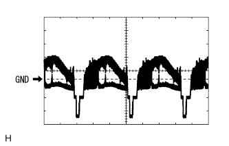

バックガイドモニターシステム ＥＣＵ端子配列 |
| 端子番号 | 端子記号 | 入出力 | テスター接続 (プラス←→マイナス) | 項目 | 測定条件 | 基準 | 基準外の場合の不具合症状 O:断線時 S:ボデーと短絡時 |
|---|---|---|---|---|---|---|---|
| 3 | ACC | 入力 | A3←→A7 | 電圧 | IGスイッチACC | 10-14V | O:システム作動せず S:ヒューズ切れ |
| 4 | +B | 入力 | A4←→A7 | 電圧 | 常時 | 10-14V | O:システム作動せず S:ヒューズ切れ |
| 7 | GND | 出力 | A7←→ボデーアース | 導通 | 常時 | 導通あり | O:ノイズ微増 |
| 10 | ILL+ | 入力 | A10←→A7 | 電圧 | ヘッドランプディマスイッチTAIL | 10-14V | O:夜画面に切り替わらず S:ヒューズ切れ |
| 端子番号 | 端子記号 | 入出力 | テスター接続 (プラス←→マイナス) | 項目 | 測定条件 | 基準 | 基準外の場合の不具合症状 O:断線時 S:ボデーと短絡時 |
|---|---|---|---|---|---|---|---|
| 2 | IG | 入力 | F2←→A7 | 電圧 | IGスイッチON | 10-14V | O:システム作動せず S:ヒューズ切れ |
| 3 | SPD | 入力 | F3←→A7 | 電圧 | 時速5km/h以上で走行する | 9V以上←→1V以下を繰り返す | 走行中に全スイッチ操作可能 |
| 5 | REV | 入力 | F5←→A7 | 電圧 | シフトレバーRレンジ | 10-14V | O:車両後退時、ナビ自車位置前進する S:ヒューズ切れ |
| 端子番号 | 端子記号 | 入出力 | テスター接続 (プラス←→マイナス) | 項目 | 測定条件 | 基準 | 基準外の場合の不具合症状 O:断線時 S:ボデーと短絡時 |
|---|---|---|---|---|---|---|---|
| 2 | CANH | 入出力 | - | - | - | - | 予想進路が表示されない、また[ガイドできません]が表示される 調整が完了できない |
| 3 | CANL | 入出力 | - | - | - | - | 予想進路が表示されない、また[ガイドできません]が表示される 調整が完了できない |
| 21 | CGND | - | H21←→ボデーアース | 導通 | 常時 | 導通あり | バックガイドモニター作動せず |
| 22 | V+ | 入力 | H22←→H21 | 波形 | IGスイッチON、シフトレバーRレンジ | 波形1 | 画面表示せず |
| 23 | V- | - | H23←→H21 | 導通 | 常時 | 導通あり | 画面表示せず |
| 24 | CA+ | 出力 | H24←→H21 | 電圧 | IGスイッチON、シフトレバーRレンジ | 5.7-6.5V | O:バックガイドモニター作動せず S:ヒューズ切れ |
オシロスコープ画面
|  |
波形1
| 項目 | 内容 |
|---|---|
| 測定端子 | V+←→GND |
| 計器セット | 0.2V/DIV、0.2μS/DIV |
| 測定条件 | IGスイッチON、シフトレバーRレンジ |
| 端子番号 | 端子記号 | 入出力 | テスター接続 (プラス←→マイナス) | 項目 | 測定条件 | 基準 | 基準外の場合の不具合症状 O:断線時 S:ボデーと短絡時 |
|---|---|---|---|---|---|---|---|
| 1 | CV- | - | 1←→3 | 導通 | 常時 | 導通あり | バックガイドモニター画面表示せず |
| 2 | CV+ | 出力 | 2←→1 | 波形 | IGスイッチON、シフトレバーRレンジ | 波形1 (約0.65V) | バックガイドモニター画面表示せず |
| 3 | CGND | - | 3←→ボデーアース | 導通 | 常時 | 導通あり | バックガイドモニター表示せず(黒画面) |
| 4 | CB+ | 入力 | 4←→ボデーアース | 電圧 | IGスイッチON、シフトレバーRレンジ | 5.7-6.5V | O:バックガイドモニター表示せず(黒画面) S:ヒューズ切れ |
オシロスコープ画面
波形1
| 項目 | 内容 |
|---|---|
| 測定端子 | CV+←→CV- |
| 計器セット | 0.2V/DIV、0.2μS/DIV |
| 測定条件 | IGスイッチON、シフトレバーRレンジ |